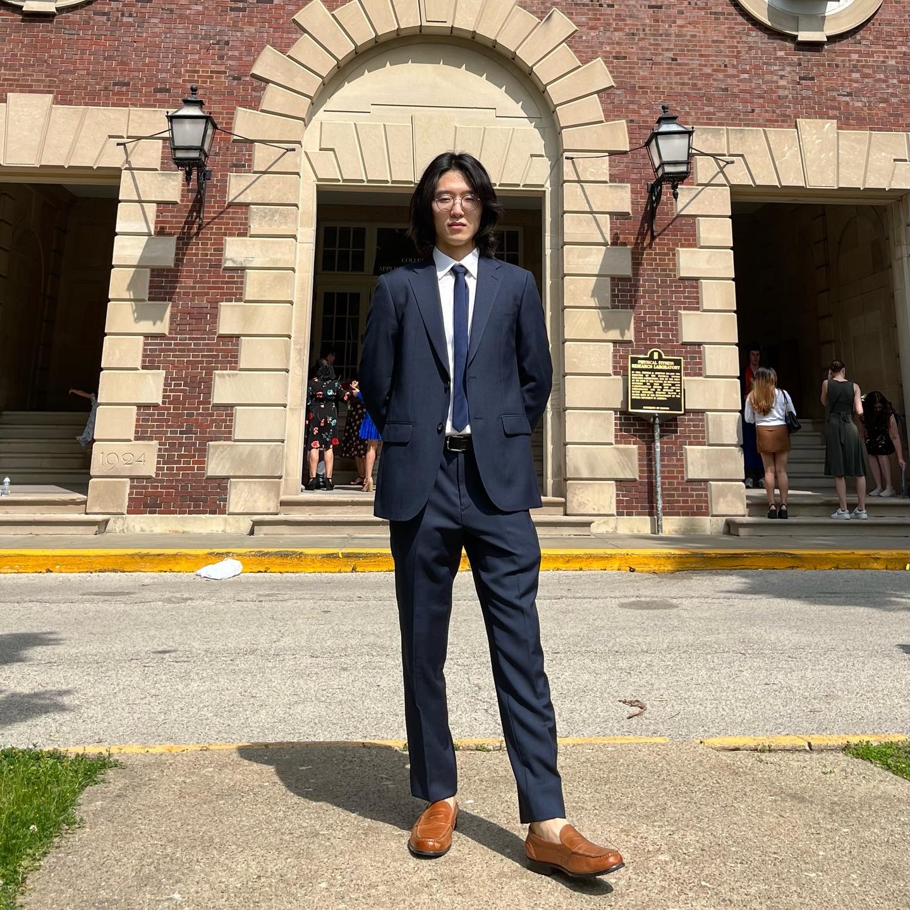

Who am I?

About me
Hi everyone! I'm Junseok Yang, recently graduated with the Master's in Statistics-Analytics (B.S. in Statistics Spring 2023) at the University of Illinois at Urbana-Champaign. There are many fields that I am interested in, and Data Science / Machine & Unsupervised learning are the main areas I want to delve in more. With the experience of several group projects and course assistant teaching during my time at UIUC, I am looking for an opportunity to stack some real world experience! I am currently looking for a job in the U.S. & Korea!